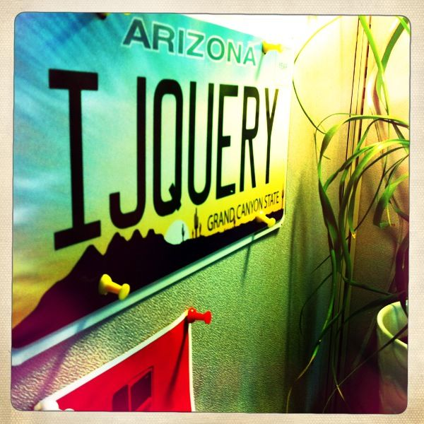

Building JavaScript Objects

Lindsay "I really like JavaScript" Donaghe
JavaScript has something that other languages lack: a sense of Freedom.
Eric Elliott

A Brief History of
... the successor to DUEL
Same purpose, new implementation.
Goals:
Streamline application UI development.
Keep UX and Dev on the same page.
Today:
XX projects are active users.
X projects are implementing.
X projects have plans to implement.
The Pieces of
The Pieces of
Styles
Controls
Delivery System
Build

Styles
Controls
Delivery System
Build
The Future of
... and YOU.
Implement:
Upgrade from DUEL, use Presentation Central.
Give Feedback:
Report bugs, ask for features, provide suggestions.
Contribute:
Fork and submit pull requests on our GitHub repo.
Controls:
http://controls.uxcore.int.godaddy.com
Styles:
http://styles.uxcore.int.godaddy.com
Presentation Central:
http://uxcore.int.godaddy.com/pc
Support:
http://uxcore.int.godaddy.com/support